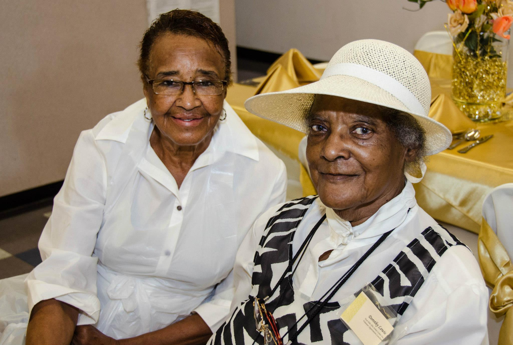
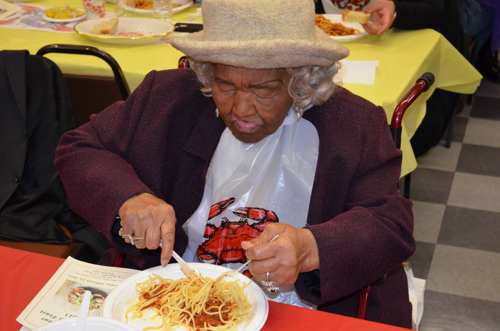

-
The East Palo Alto Senior Center was established in 1982 for those who are age 55 or over or spouse of a Senior. As a multipurpose Senior Center, it offers a variety of activities and assistance to Seniors.
The staff and volunteers provide information about resources in such areas as housing, employment, household help, recreation, financial assistance, health services and in-home help. Health education and screenings are provided at the East Palo Alto Senior Center.
Continental breakfast and hot lunch meals are served during the week, Monday through Friday. A brown bag program is offered every Thursday. Transportation is available to take Seniors to doctor appointments and on essential errands.
 -
Contact Us
Location
560 Bell St.
East Palo Alto, California
94303Hours
9am - 3pm Mon. Weds. Fri.
9am - 3:30pm Tue. and Thurs.Numbers
650.329.5900 main
650.688.1823 fax
650.688.1824 mealsPresident
Millicent Grant
email: grant_millie@yahoo.com | epseniorcenter@gmail.com | facebook.com/epasc -
Come early and Join us for lunch@ 12Van to the Senior Center
Must register on-site first; donation requested
please call
650.329.5900 -
Meal Services
Meal services offered on-site weekdays
50 cent continental breakfast 9am

$3 - lunch 11:30-12:30 - $6 under 60please call 650.688.1824
- donantions are always greatly appreciated